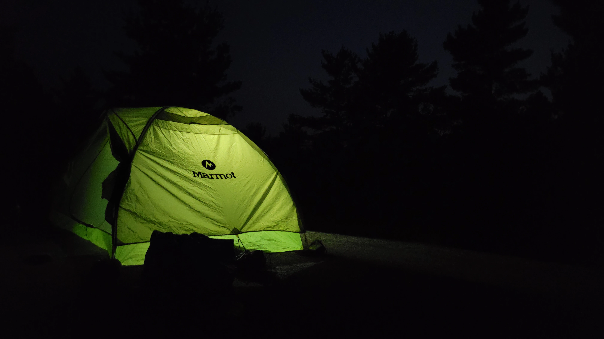
Over the years I've learned that successful kayak trips depend less on having the newest equipment and more on understanding the gear you already own.
The equipment listed here has been used on countless day paddles, weekend trips, and multi-day expeditions throughout Georgian Bay, the North Channel, the Bruce Peninsula, and the Saguenay Fjord.
Some items are premium pieces of equipment I've trusted for years. Others are inexpensive solutions that simply work.
"Some of my most trusted gear wasn't expensive at all. Many items have been repaired, modified, reused, or repurposed over the years. Experience has taught me that reliability matters far more than chasing the newest equipment."
Many people pay for flights, resorts, hotels, cruises, restaurants and guided tours. I invested in equipment instead.
Over the years I've accumulated a substantial collection of paddling and camping equipment. The total cost certainly adds up, but it was never purchased all at once.
Most of it was acquired gradually over many seasons, often after saving for months or waiting for the right sale. Some items were purchased used, others were upgraded only after years of service from older equipment.
What this gear ultimately provides is freedom.
Instead of booking flights, reserving hotels, purchasing tour packages, or planning expensive vacations months in advance, I can load a kayak, launch from a shoreline, and spend days or weeks exploring some of the most beautiful places in Canada with very little additional cost.
Once the equipment is purchased, many adventures cost little more than time.
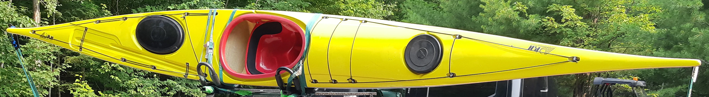
My primary expedition kayak for day trips and multi-day journeys. The kayak has been modified with custom deck lines, paracord, performance hatch covers, and a custom fiberglass keel strip.
It is fast, efficient and tracks straight for the long distances. Fiberglass is durable and easy to repair.
My first kayaks were wider, more stable at first, but limited my paddling techniques. They were great for compfort, and easy turning with their rudder systems, but lmited my ability to advance with my skills, use a high-angle paddling technique, and implement powerful strokes. I prefer the feeling of a skeg stlye kayak, with fixed foot pedals that provides more stability and balance in rough conditions.
Visit P&H →One of the best purchases I've ever made.
When I bought the paddle, I could barely afford it. The local paddling shop salesman strongly encouraged me to choose the bent shaft version despite the higher cost.
At the time I wasn't convinced, but years later I understand why. I've had wrist problems from sports and weight training, and the ergonomic shaft has helped reduce strain during long paddling days.
Looking back, I couldn't really afford tendonitis either.
View Product at Werner →My primary life jacket for touring and expedition paddling. Comfortable enough to wear all day and equipped with useful storage pockets for safety equipment and frequently used items.
View at Manufacturer →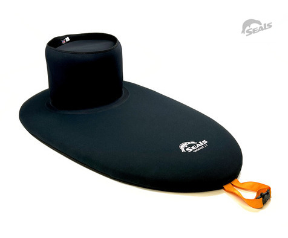
Reliable protection from waves, wind, and rough water. A dependable piece of gear that has accompanied me on countless trips. Having had nylon spray skirts collapse on me multiple times, from even the smallest waves, I still shudder when I see a kayaker with one of those heading out into the Georgian Bay, or worse, no skirt at all. I consider my neoprene skirt as essential of a safety item as my life jacket.
View Product at Seals →My primary GPS and navigation device using downloaded offline maps on my smartphone. It also serves as my camera, weather station, and more if I can pick up a signal. This specific phone appeals to me because it has a slot for a micro SD card, allowing me to add an extra terrabyte of storage, more than enough space for pictures, videos, music and audiobooks. Becuase the phone is 6 years old, a second one to keep as a spare was affordable.
A third phone is carried separately as a navigation and emergency backup. Even though it is an older device, disconnected phone's with no sim card can still pick up and process GPS signals, and dial 911. Some newer models can even send an emergency call over a satellite network when no regular lte/4G/5G network is available.
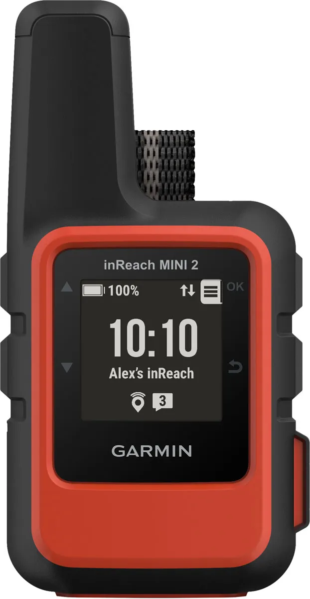
Satellite communication device used for emergency messaging, weather forecasts, and SOS capability when travelling beyond cellular coverage. Luckily I have not had to use this yet, but it has always held its charge, and I am confident that I can signal for help at the push of a button.
View Product at Garmin →Used to keep navigation devices, communication equipment, and cameras charged during extended trips.
Inexpensive battery-powered headlamps from Canadian Tire. Simple, reliable, and easy to power using rechargeable AAA batteries.
View at Canadian Tire →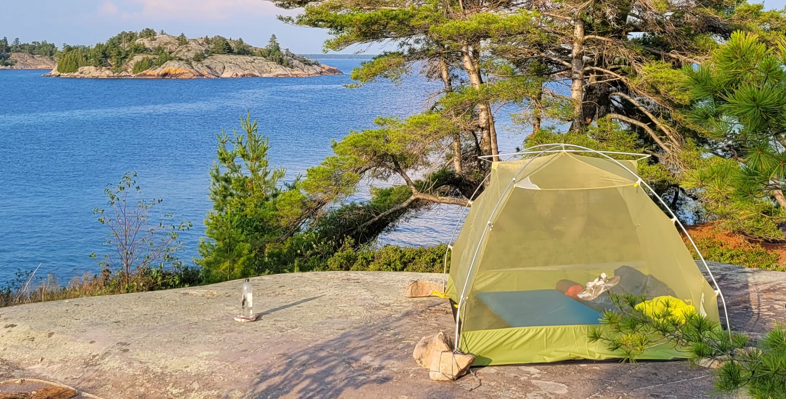
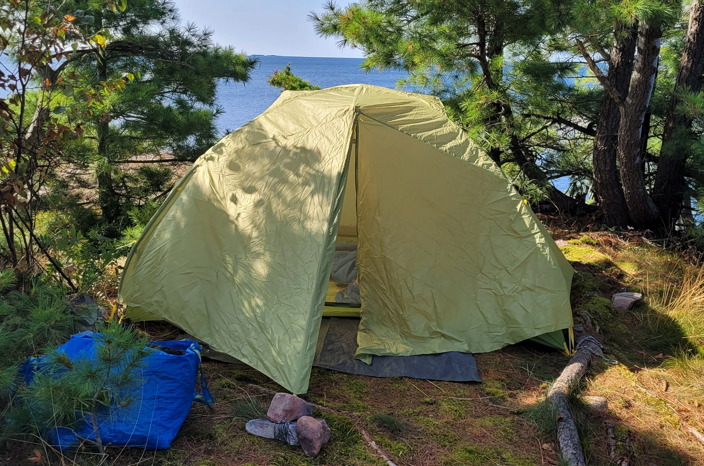
My primary kayak camping shelter. Spacious enough for gear, extremly lighweight and compact, easy to set up has kept me dry during storms. It does require some gentle care. Although this is one of my luxury items, it allows me to take trips to places I don't think most people get too visit, and has enough room to share it with a companion. Due to its weight and size, it allows me to carry more food an/or luxury items that a heavier shelter would not.
View at Altitude Sports →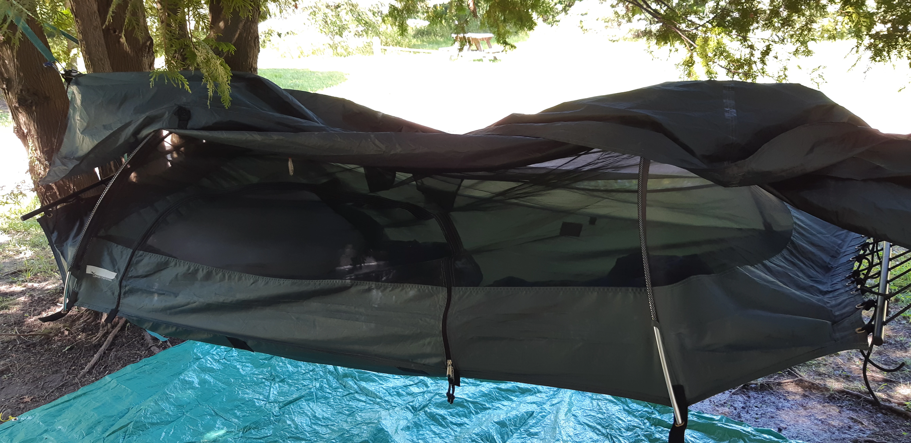
A comfortable alternative when suitable trees are available. As a beginner, I assumed this would be lightweight, portable and gentle on my back. It has it's disadvantages and it's perks. My tent requires enough flat surface area, where as the hammock does not care about the terrain below, only that its being supported properly. With careful balance, and the right location, it offers the kind of peace and serenity that is impossibly perfect.
Visit Lawson Hammock →Primary cold-weather sleeping bag for shoulder season trips.
Visit Marmot →A fleece blanket that rolls up and fits into a small compression bag. Versatile enough to be used as a sleeping bag or liner, add extra warmth when or where needed, or even as a pillow. I always bring this with me, its ligh weight, portable and available as a spare or backup. One of the items I've bough on sale for and has retured much more than it's monies worth. During the winter, it stays in my car as an emergency blanket.
View at Canadian Tire →Extremly lighweight and portable. It claims to be able to add a significant amount of heat to an existing sleeping bag. I consider it partly as a luxury, part emergency item. It definetly adds warmth if needed, I am still skeptical about how effective it is. But it is nice to have something so compact, that I dont have to think twice about stuffing it in to my kayak or hiking bag.
View Product at Sea to Summit →This was a budget purchase that exceeded the quality of more expensive brand names. Very easy to inflate and deflate. It has a convenient bungee strap and some rubber studs that help stop it from slipping around. I love everything about this specific product.
View at Amazon →At the time I build this website, I no longer see this item available. It works as intended, but if I needed to replace it today, I would absolutely replace it with the Trekology pillow mentioned above instead.
One of the most comfortable sleeping pads I've ever used. Considerably heavier than other sleepng pads, it is worth it for its extra width and thickness when sleeping on granite rocks.
View at Amazon →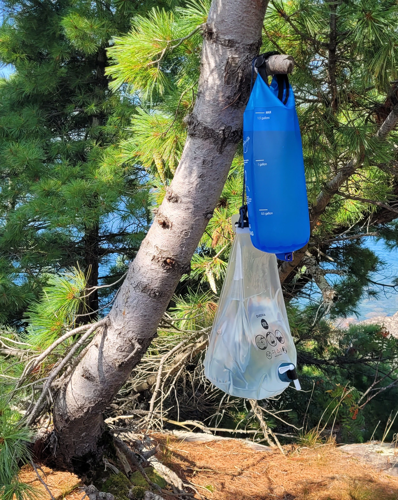
Gravity style water filtration system. Simple, lightweight, and effective. I recently purchased some food grade PVC tubing to connect the water filter to the water container I am filling, to simplify the filtration process.
View at Amazon →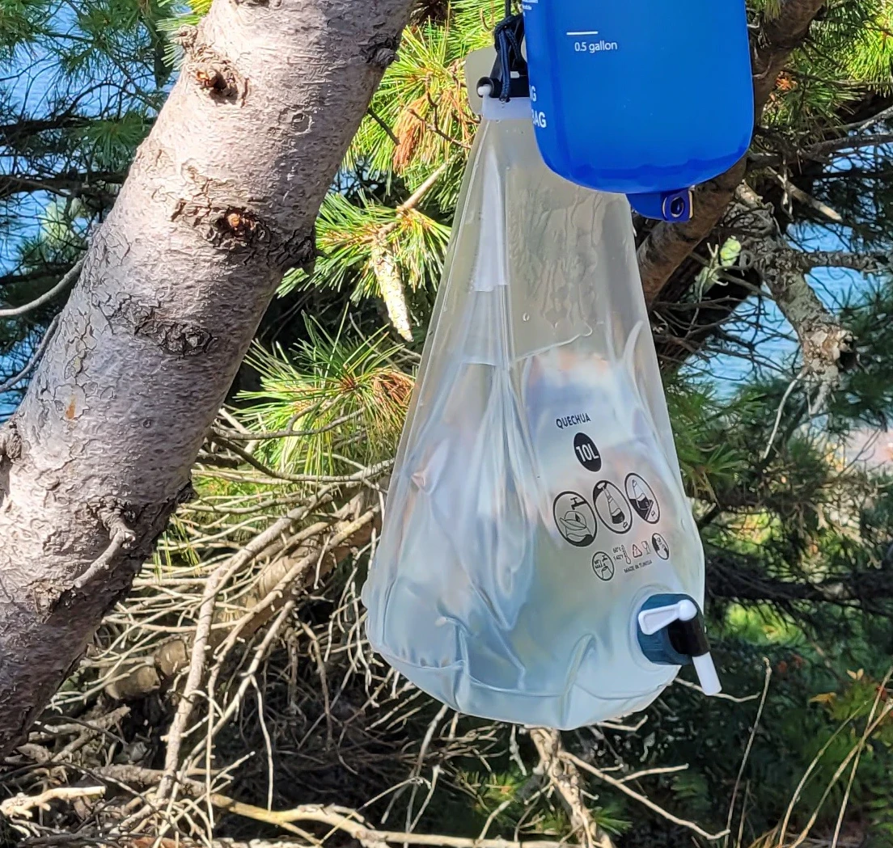
Used for filling large amounts of filtered water, transporting and storing at camp.
View at Decathlon →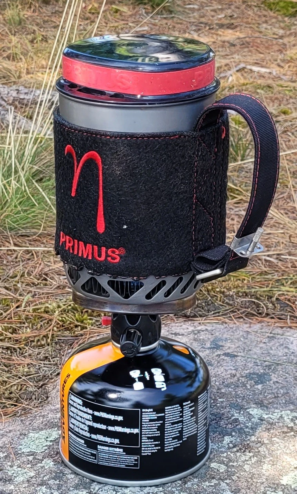
One of the best purchases I have ever made. Serves me in both the front country and back country. Boils a half liter of water in about 60-90 seconds, for cooking oatmeal, wheat burgul or other dehydrated food. Light, packable and reliable. I use an external lighter to ignite it, and ocassionaly shield it when it is windy. The butane canisters last countless boils. Ive used Jet boils that worked better with a more solid lid and better insulation. But for the $40 it cost me, I wish I bought a second one. Handy if ever my electricity goes out, or, if I just want to make some coffee or oatmeal anywhere. Ive been using it since 2017.
View at Altitude Sports →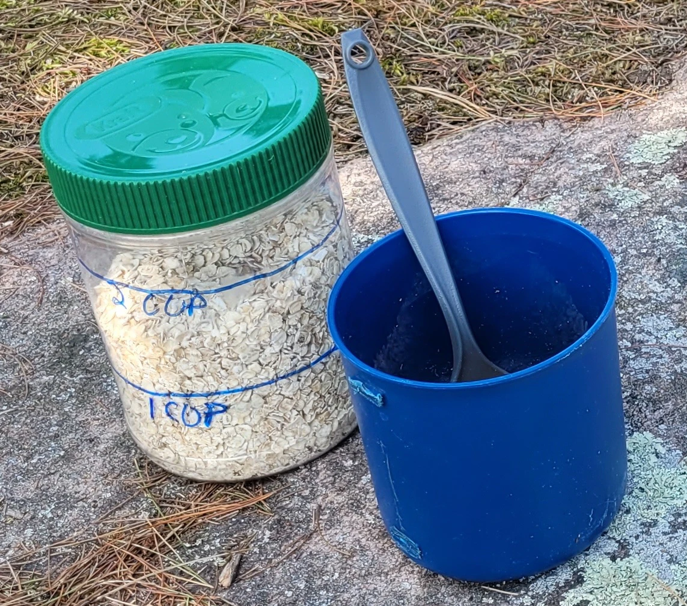
GSI branded plastic bowl, mug and cutlery. The mug had a plastic handle that I removed with a saw and then filed smooth, allowing me to fit it directly inside of my Primus water boiler. As a luxury item, I bring a grocery store mesh coffee filter and cantine for backpacking coffee. I add preground beans to the thermos, than water, then pour it through the filter into my mug.
View mug at MEC →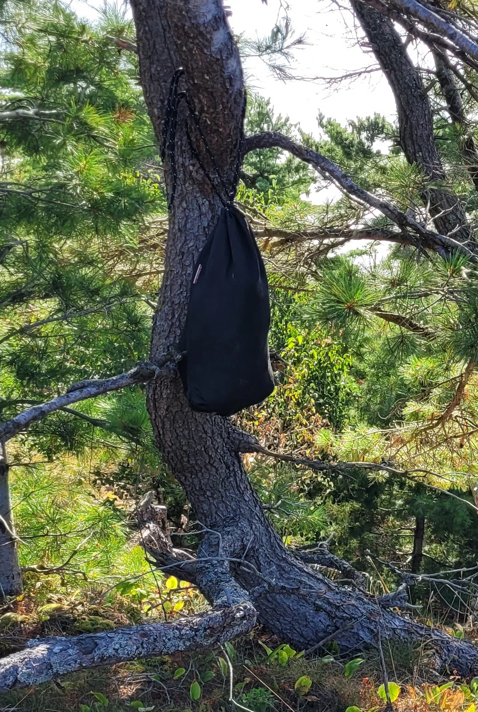
Lightweight, portable and bearproof food storage for extended wilderness travel. I have used it on many trips, and never had an issue with rodents or other small critters penetrating it. I use some smell resistant bags for added protection. I use old peanut butter containers for storing dry food such whey protein, oatmeal, nuts, seeds, dried fruit, etc..
View Product at Ursack →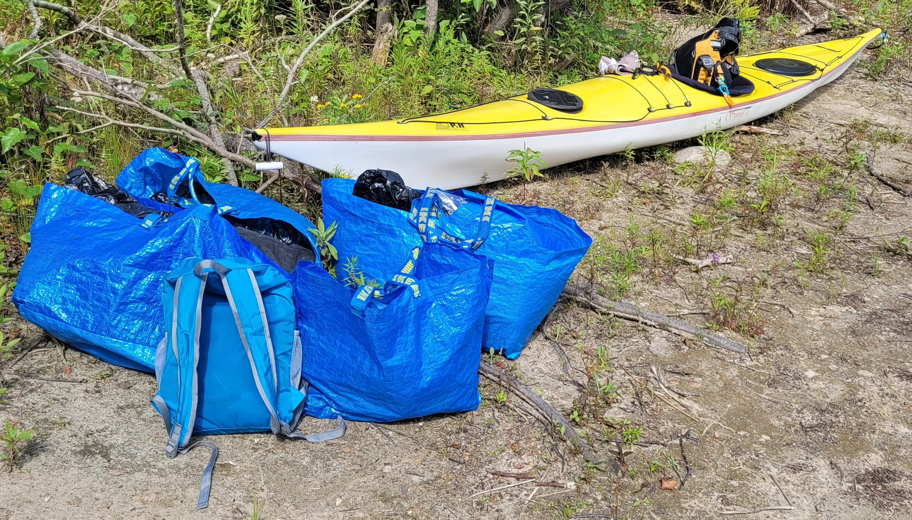
These big blue IKEA bags have become one of my favourite pieces of expedition gear. They're inexpensive, extremely durable, waterproof, easy to carry, and capable of hauling a surprising amount of equipment between the kayak and camp. They're also almost universally recognizable among the kayaking community.
I use the large and medium versions to transport gear from the kayak to camp, keep equipment together, and provide an extra layer of protection from rain. I've even used one as an improvised shelter during a heavy rain shower.
I don't carry traditional dry bags for of my gear. Instead, I use reusable Ziplock-style bags for clothing, electronics, food, and other items that need to stay dry.
I double-bag everything. The second bag provides additional waterproofing while also helping compress soft gear enough to fit efficiently inside the kayak's hatches.
A lightweight, water resistant and packable backpack. Allows me to bring a few items with me when I get out of my kayak and wander around to explore and take pictures. I also use it to bring food and cooking gear easily to a nice location away from my campsite. When Im not kayaking, it doubles as something for bike rides, I can leave my bike locked up, and empty my saddle bags into it.
Zomake Packable Bag at Amazon →A kayak expedition doesn't begin at the shoreline. For me, it usually begins several hundred kilometres earlier, somewhere on a highway with a fully loaded car, a sea kayak strapped to the roof, and a destination that still looks very far away on the map.
For years, I experimented with different ways of getting my kayak there. I started with the simplest possible solution: foam blocks and tie-down straps. Surprisingly, that arrangement worked for thousands of kilometres. It was inexpensive, simple, and got the job done. But it wasn't an ideal long-term solution for a car roof. Foam can shift, particularly when it gets wet, and the kayak can gradually move with it — something that becomes considerably less reassuring when you're driving on an exposed highway in strong wind.
I eventually tried J-hooks as well. They were convenient and worked well for transporting the kayak, but over longer trips I began noticing something I didn't like: the relatively small contact points and lack of substantial cushioning were putting pressure on the kayak itself. Furthermore, J hooks require lifting the boat above them, which puts a paddler at an extreme risk of shoulder injury, especially when loading the kayak after a long day pf paddling
Kayak saddles presented another variation on the same problem. They held the boat securely, but again, there wasn't enough soft support between the rack and the hull for the kind of long-distance transportation I was doing.
Eventually, I decided that instead of adapting my kayak to whatever commercial rack happened to be available, I would build something around the kayak itself.
My preferred transportation has always been the humble old Honda Accord, although a Toyota Camry would certainly be acceptable. Better yet. a station wagon. They're spacious enough to carry an unreasonable amount of equipment, reliable enough for long drives, affordable, maintainable, and, most importantly, low enough to the ground that loading a 17-foot-plus sea kayak onto the roof remains reasonably manageable. An SUV or van would be too complicated to access the roof.
The brand SportRack was the most affordable and versatile roof rack available on the used market. The design is relatively universal, and can be purchased at Canadian Tire.
View Product at Canadian Tire →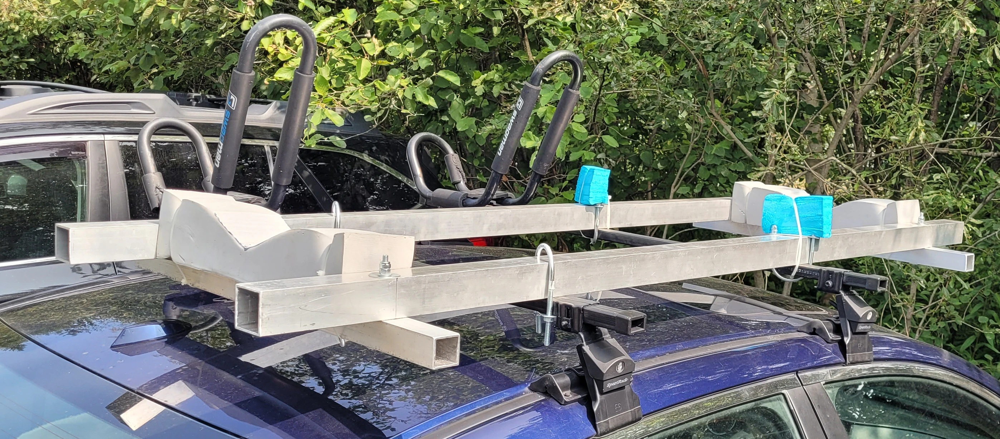
I eventually built my own aluminum kayak rack to address the shortcomings I found with commercial and improvised systems. The rack is designed to support the kayak primarily around the bulkheads, where the hull has greater structural strength. Generous sections of high-quality foam provide a wide, cushioned contact surface between the aluminum rack and the hull, reducing concentrated pressure and protecting the fiberglass during long-distance transport. The aluminum rack attaches to an entry-level SportRack roof-rack system with U-bilts, combining the affordability of a commercial base rack with a custom support structure designed specifically around my kayak. The result is a rigid, stable, and well-padded system that has proven much better suited to long-distance transportation than the foam blocks, J-hooks, and saddles I used previously. Furthermore, it makes loading and loading the kayak much less streneous and safer for my shoulders. I'll be adding more detailed instructions, measurements, and photographs documenting the construction of the rack soon. It essentially consits of four square tubes of aluminum, bolted together with holes that were drilled into them, some rubber between the connection points, nylon zip ties to support the foam, and U-bolts for mounting the rack.